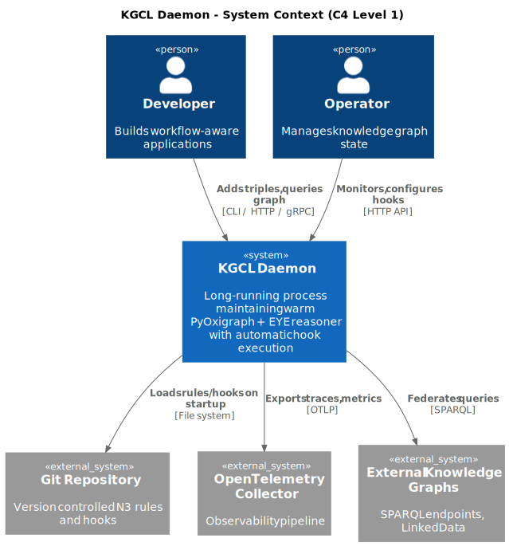
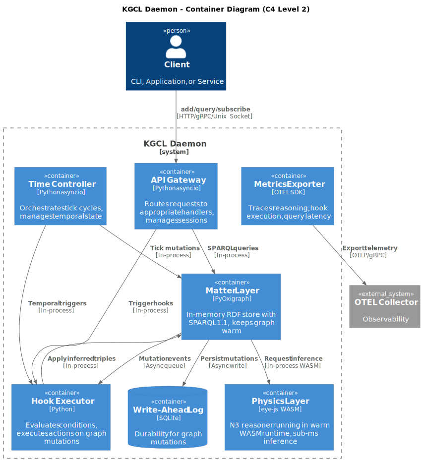
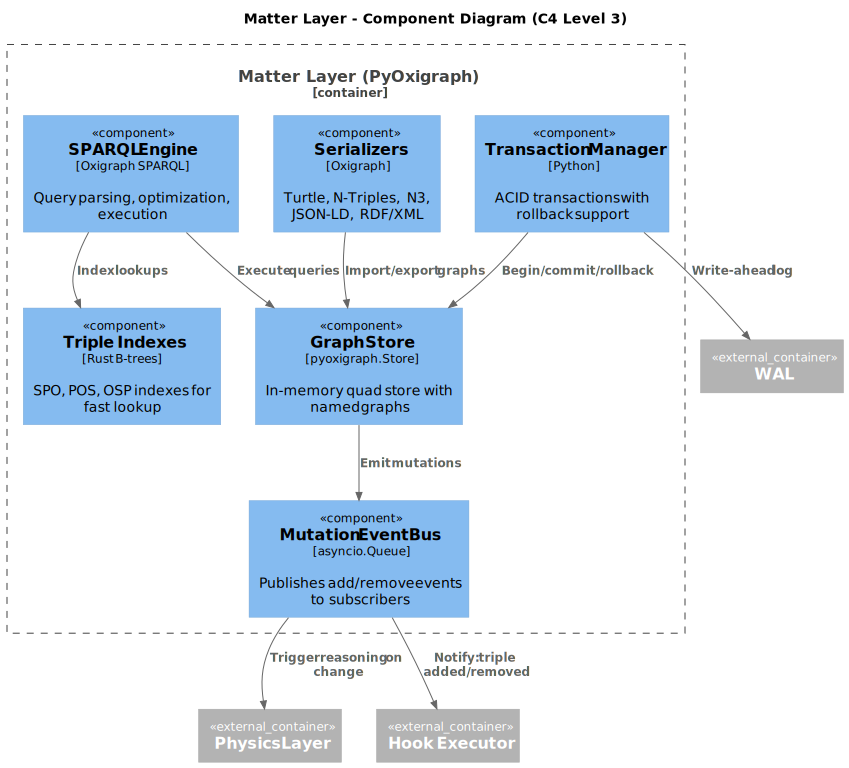
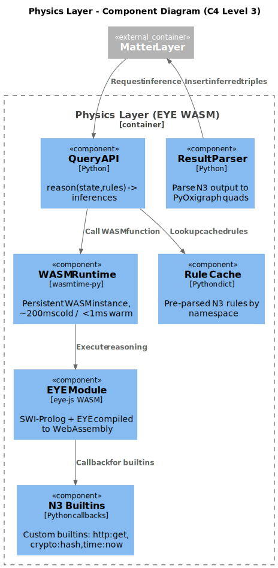
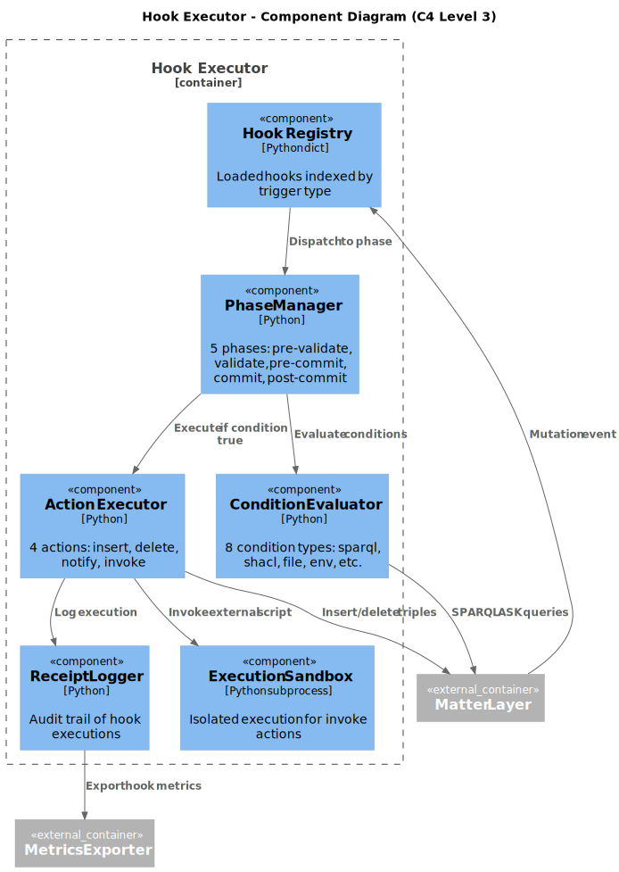
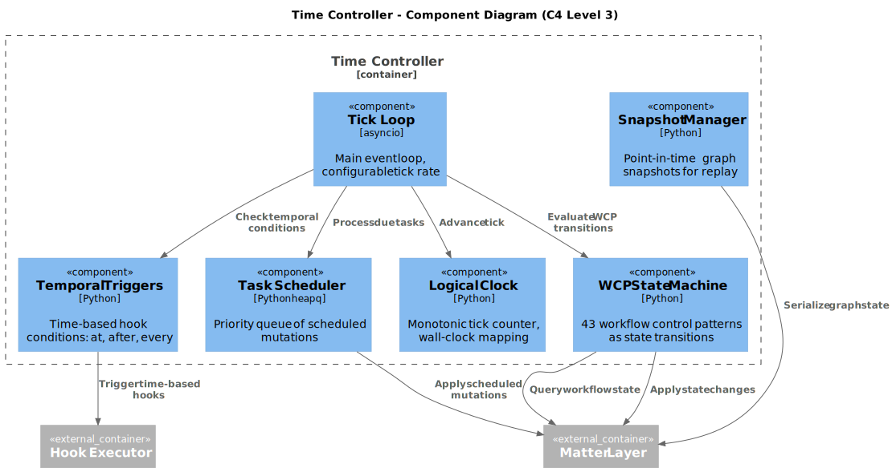
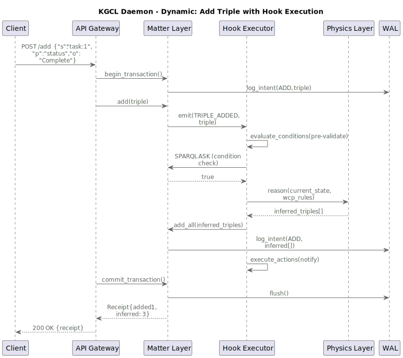
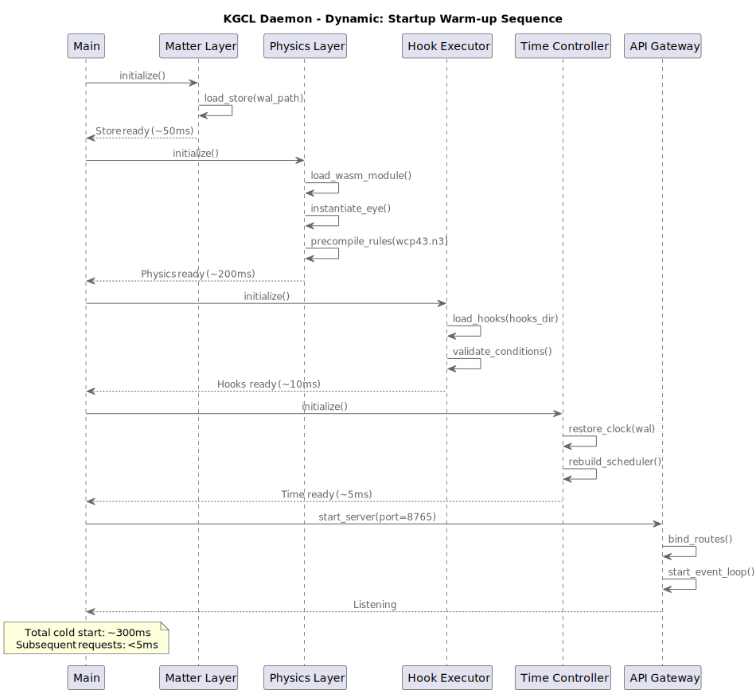
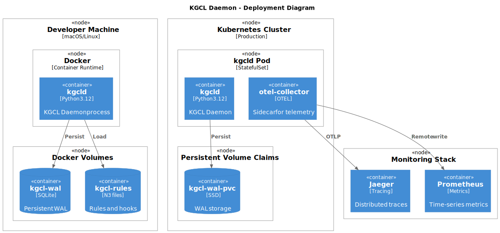

C4 Model Diagrams - Knowledge Graph Control Language Daemon
High-level view showing KGCL Daemon in its environment - developers, operators, and external systems it interacts with.
The major containers within KGCL Daemon: Matter (PyOxigraph), Physics (EYE WASM), Hooks, Time Controller, and supporting infrastructure.
PyOxigraph internals: Graph Store, SPARQL Engine, Transaction Manager, Indexes, and Mutation Event Bus.
EYE WASM reasoner: WASM Runtime, Rule Cache, Query API, N3 Builtins, and Result Parser.
Hook system: Registry, Condition Evaluator (8 types), Action Executor (4 actions), Phase Manager (5 phases), Sandbox, Receipt Logger.
Temporal orchestration: Tick Loop, Logical Clock, Task Scheduler, WCP State Machine, Temporal Triggers, Snapshot Manager.
Runtime behavior when a client adds a triple: transaction, mutation events, hook evaluation, reasoning, and commit.
Daemon initialization sequence: load store, instantiate WASM, load hooks, restore clock, start API server. ~300ms cold start.
Development (Docker) and Production (Kubernetes) deployment configurations with persistent storage and observability.
